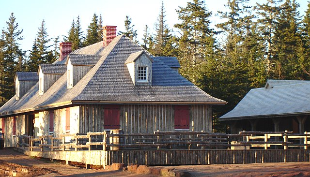

COMMUNITY FOUNDATION OF
PRINCE EDWARD ISLAND
“CONNECTING PEOPLE WHO CARE
WITH CAUSES THAT MATTER”
The Foundation is a volunteer driven, non-profit, charitable organization whose mission is to improve the quality of life on P.E.I. through the creation and building of endowment based, charitable trust funds.
The administration of the Foundation is funded by a small trust fund administration fee and donations from directors, individuals, and businesses.
BOARD OF DIRECTORS:
John Robinson, President Tom Davies, Vice-President
Joyce Gaudet, Secretary Myron MacKay – Treasurer
Norman Carruthers, Past President John Ives
Dr. Don Glendenning, C.M. David Campbell
Heather MacDonald David Anderson Lou Ann Thomson Marie Salamoun-Dunne
FUND MANAGEMENT:
Phillips, Hager & North
SOLICITOR:
James Travers, Q.C – Stewart McKelvey Stirling Scales
AUDITORS:
David Arsenault, ArsenaultBestCameronEllis
FUNDS UNDER MANAGEMENT:
Agricultural Equipment Fund ALS Society
Anonymous #2 Architects Association of PEI
Joan Auld Scholarship Fund Community Fund
Beach Tennis Club Trust Fund Foundation Fund
Ruby & Lorne Bonnell Scholarship Fund #1
Highfield Cemetery Fund J Melville Campbell Fund
Dr. Marlene Bryenton-Ghiz Park Fund Island Shrine Fund
Orin Carver Scholarship Program
Glendenning FamilyFund
Cumberland-Rocky Point WI Legacy Fund
Living Memorial Trust Island Arts & Heritage Fund
T. Arthur Dawson Scholarship Fund PEI 4-H Trust
Jessie Drummond Public Speaking Award Souris Fund
Eric C. Robinson Fund MacMillan-Bagnall Shrine Trust
J.Gwenyth Lantz Memorial Fund Visual Arts Fund
G. Gordon Lord Scholarship Fund
Hesta MacDonald Legacy Fund
David A. MacKay Endowment Fund
L.M. Montgomery Land Trust Fund
The Old Protestant Burying Ground Fund
Lowell Phillips Scholarship Trust
Summerside-Natick International Hockey Fund
Dr. Donald Taylor Memorial Fund
Thomas F. & Katherine Upson Fund
Hospice Pallative Care Association of PEI
Women’s Probus Club of Charlottetown Fund
COMMUNITY FOUNDATION OF
PRINCE EDWARD ISLAND
119-121 Queen Street
Charlottetown, PE C1A 4B3
902-892-3440
“CONNECTING PEOPLE WHO CARE
WITH CAUSES THAT MATTER”
Celebrating fifteen years of service
and a one million dollar contribution to PEI
FIRST ANNUAL FUNDRAISING DINNER
Hosted By

ROMA AT THREE RIVERS HISTORIC SITE
Wednesday, August 20, 2008
Ticket Price - $90 per person ($50 tax receipt)
Reception: Steamed Mussels and Period Bread
Cash Bar: 6:00 to 7:00
Dinner: 7:00 p.m.
Squash Soup Beet and Pearl Onion Soup
Choice of Roast Loin of Pork or Salmon
Maple Ginger Turnip
Red Cabbage with Caraway and Blue Cheese
Small Red Potatoes
Dessert: Chef’s Surprise
Tea or Coffee
Entertainment by the Singing Strings
Silent Auction
Dress: Smart Casual